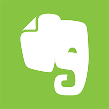
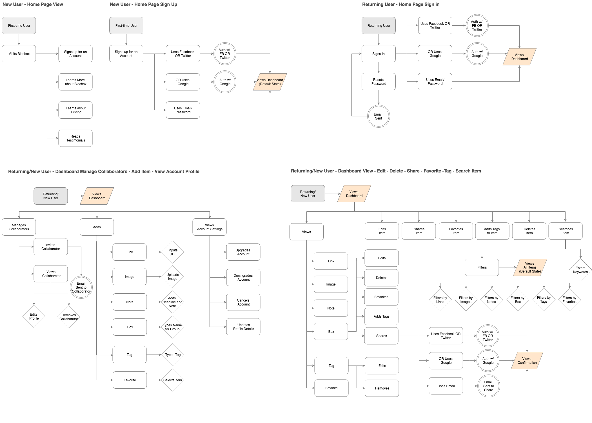
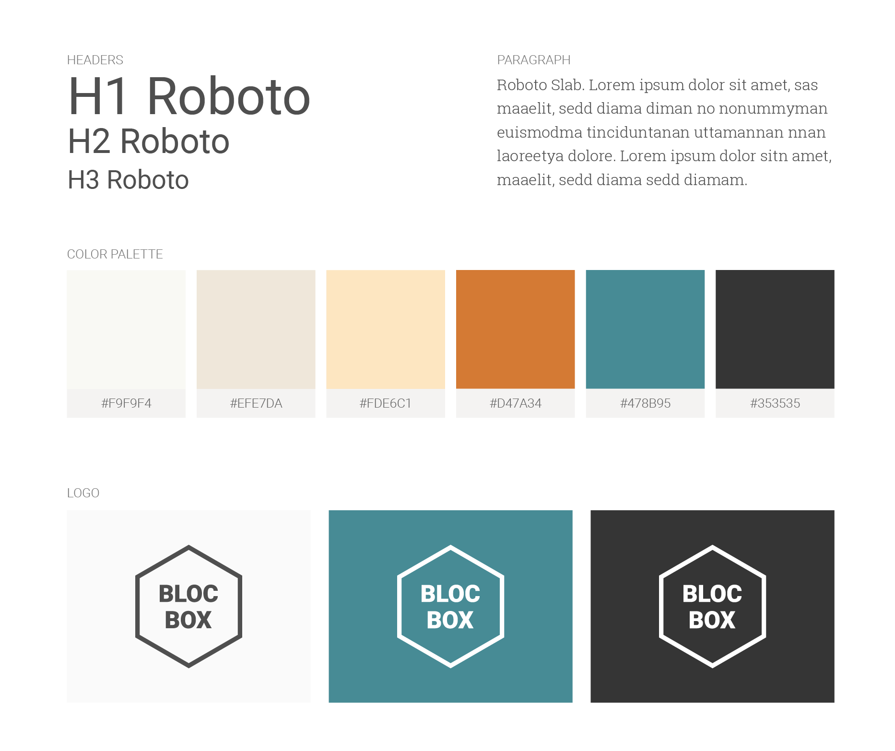
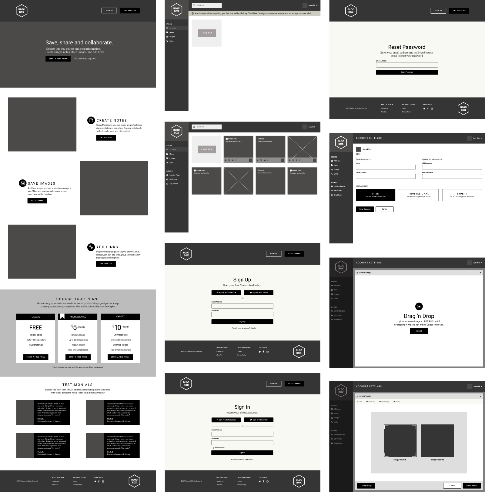
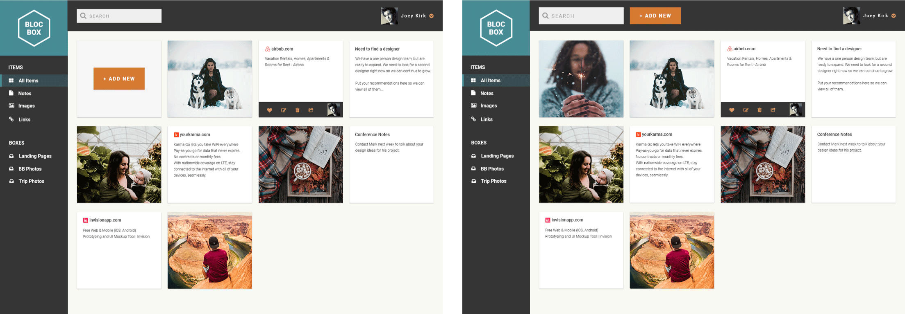

Evernote
- Their basic plan is free and comes with 60 MB of new uploads per month.
- They provide rich-text notes, including highlighting, checklists and formatting.
- Evernote can be used on phone/computer and sync across devices.
- Users can tag and merge notes, or select multiple notes and change their combined tags.
- Users can attach files to notes: word, sheets, presentations, images, PDFs.
- Evernote has too many features/too complex for simple note taking and somewhat cluttered.
Apple Notes
- It is completely free to use and it doesn’t require or consume iCloud storage space.
- Users can send notes to text message, messenger, mail, social media and third party apps.
- Users can create multiple folders, and assign content from various apps within a share sheet on Mac or iOS. No device limit.
- Users can share their notes directly to Reminders, and create “Apple Notes” lists within the Reminders app.
- There are no tags so no way of grouping notes together by tag across various folders and can't search for tags.
Pinterest
- It is free, easy and simple to use with visual grid layout and it has an eye catching imaging.
- Users can use search field to search and “pin it” button to pin an item on any website and they can use more option to view similar items.
- Users can go back to the original website to learn more about the item that they pinned.
- There is a debate whether photos taken from websites are compliant legal rights of the original owner of that photo.
- It is considered as a site for women, whereas other sites are more popular with both genders.
See detailed SWOT analysis
Key Takeaways
- Based on the survey results, user interviews and competitive analysis our application should be responsive to allow users to access content from any device.
Users like being able to access notes from anywhere easily.
- Blocbox should also make managing and searching content easy by allowing grouping and categorizing saved content since majority
of our user based mentioned this as one of their pain points.
- They like using reminders feature while using tools from competitors so we should consider
offering “ability to set reminders” as one of Blocbox's features.
- Another important feature that they like to see in our application is a way for collaboration and ability to share items with others easily so I will make sure
to incorporate this concept into my design.
- Considering that most of our users like social media and tend to forget their passwords Blocbox's design should include social
registration for easy access.
User Stories and User Flows
According to the key takeaways I documented the user stories and prioritized them as High, Medium and Low. The High priority stories defined MVP (Minimum Viable Product) for Blocbox.
Below you can see the high-priority user stories.
- As a User I want to find out more about Blocbox.
- As a User I want to create an account with my email address and password.
- As a User I want to create an account using Twitter, Facebook and Google.
- As a User I want to view my account profile.
- As a User I want to update my account profile.
- As a User I want to add, edit, view and delete a text-based note.
- As a User I want to add, edit, view and delete a link.
- As a User I want to add, edit, view and delete an image.
- As a User I want to create, edit, view and delete a box.
- As a User I want to upgrade, downgrade and cancel my account.
- As a User I want to sign in using my email and password.
- As a User I want to reset my password.
- As a User I want to sign in using Facebook, Twitter and Google.
I drawed the user flow diagrams based on the defined user stories.

Branding and Style Guide
The hexagone shape created the 3d box impression for Blocbox's concept of collecting and storing items in a box.
I picked colors that could communicate the brand as simple, dependable, structured and serious while being friendly, warm, welcoming and trustworthy.
The color palette consists of cold and warm tones to compliment each other. My intention was to make sure that everyone felt welcomed to Blocbox
while carrying a structured application identity.

Wireframes
I created Blocbox's Low Fidelity wireframes and explored different layout variations in Balsamiq. I updated them with Blocbox's logo, content
and fonts that I picked and created the High Fidelity wireframes.

Usability Test Results
I used UserTest.IO and conducted usability tests with 4 users with the first version of the prototype. I asked them to perform a set of tasks. You can see a sample of these tasks below.
- TASK 1: How would you access and sign up for this product?
- TASK 2: Are there other ways that you can use to access and sign up for this product? Are they sufficient options?
- TASK 3: Now that you signed up and navigated to your dashboard for the first time. How can you add a piece of content? What do you think “Add New” represent? What options are you provided? What do you think they are for? Explore each option.
- TASK 4: Since you have already signed up and created an account. How would you sign in to your account?
- TASK 5: What do you see on this page? What option would you use to sign in to your account? Do you think the available options are sufficient?
See the entire test script
Key Takeaways
Based on the feedback that I gathered during the usability tests I decided to make the following changes in my design.
Design and Navigation
- Users liked that Blocbox's design was simple and clean, but adding the content section was not grabbing their attention. They said that it could be due its being in grayscale.
- They tried to click on items on the left navigation bar and wondered about their purpose of use.
- Users wanted to be able to utilize search and looked for help options. There was no option to walk them through the tool as a tutorial or as a wizard.
Decisions: There will be a notofication message at top when users visit Blocbox's dashboard for the first time to inform them about how they can add content.
Product Purpose
- Users were confused about the purpose of the product. They thought that there wasn't enough information about how they could use it. They were confused about the term “box.”
- They thought it might be a cloud storage tool. “It’s easy to navigate around, but what is this product? Is it like Dropbox?”
- They thought that it might be a data aggregation tool, mark down version of google docs. They suggested integrating it with google docs.
Decisions: Users captured the purpose of the product correctly. However, it is true that there are many products available
with the same purpose of use. The content needs to cover what differentiates Blocbox from its competitors.
Sign In/Sign Up and Account Settings
- They thought that there were different ways to sign up for the product with all the “Get Started” options.
- They thought that the signup options were sufficient. Some suggested adding google as a sign in/sign up option.
- They thought the available options on the account settings were sufficient.
- About avatar image, they missed the “Edit” link. They wanted to click on the image to update their profile avatar image.
Decisions: The avatar image will be clickable to make it easy for users to update their account profile photo. Google Sign In/Sign Up option will be available.
Dashboard
- The message bar at top was avoiding users to access the “Add New” dropdown options. It was confusing that they had to close the message in order to click on the Add New button.
- They suggested making the boxes editable in addition to the edit icon. “Why can’t I click the whole thing to view and edit? I would expect that.”
Decisions: The message bar at top will not require to be closed and it will not avoid users to take an action on Dashboard page. The boxes will be editable.
Home Page and Dashboard
I performed a preference test by placing the "Add New" button next to the search field at top vs. placing it in the body of the Dashboard. The audience thought that either options were acceptable, about 41%
preferred the "Add New" button in the body of the site instead of the header. Some thought that it was confusing to see it next to the search field.
Since the preference test was not statistically different between them I decided to place it in the body of the site.
See test results

I also performed a dashboard navigation test to see if users could click on the "Add New" button to upload an item on Dashboard easily. About a total 57% of participants completed the step successfully in an average of 4 seconds.
See test results
I performed a 5 second test for Blocbox's homepage to see whether users thought the brand appeared trustworthy. Majority of them found the site trustworthy and rated it as 4 and 5 out of 5 rating scale.
See test results
Mockups
Based on the test results and the decided changes I created the mockups in Photoshop by adding Blocbox's colors, logo and images. I conducted usability tests with 3 users with the updated version of the prototype.
Below you can see a link to one of the usability test session recordings as a sample and the final mockups.
Session recording

Final Thoughts
I developed a responsive home page and a dashboard for Blocbox to practice my coding skills. Here is a link to the code in GitHub.
As a result of this project, the product purpose was communicated succesfully because all users thought that the site was about collecting items similar to the the services that Blocbox's competitors provide. Users thought
that the site looked very professional and reliable. They liked the design and the color palette. They said that everything they would want to see was there.
They liked the idea of being able to use Blocbox for free without paying upfront and being able to save links compare to the other sites, where they were just allowed to save files. They mentioned that adding more information about
the company, its mission statement and employees would have been great.